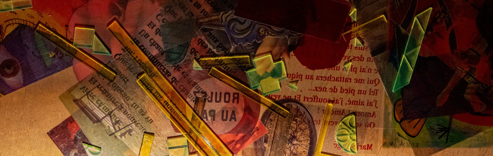
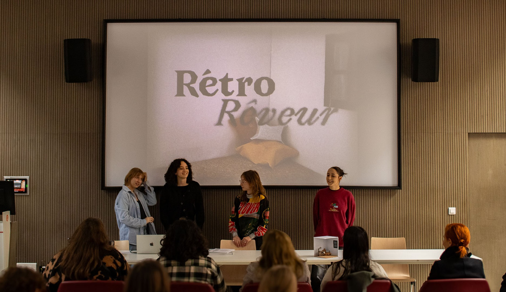
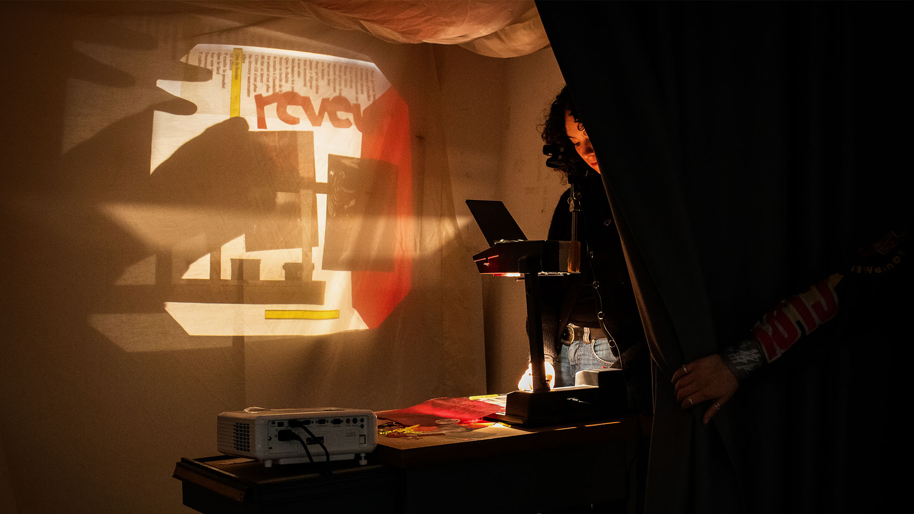
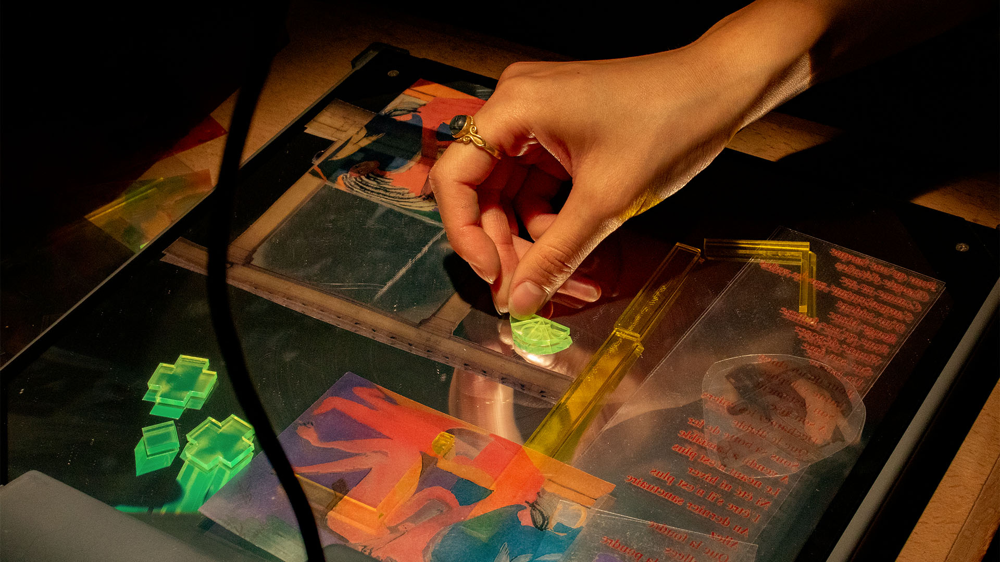
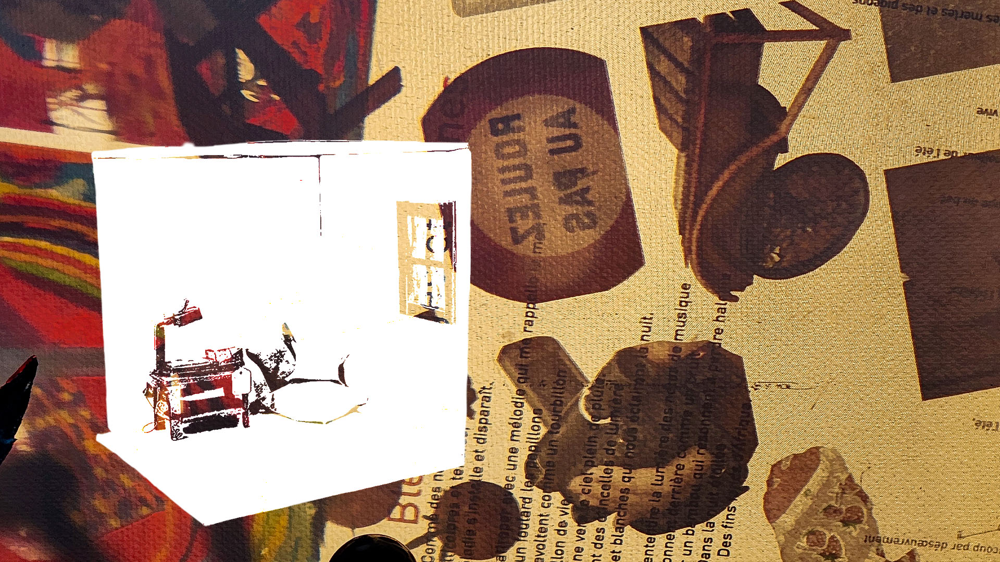
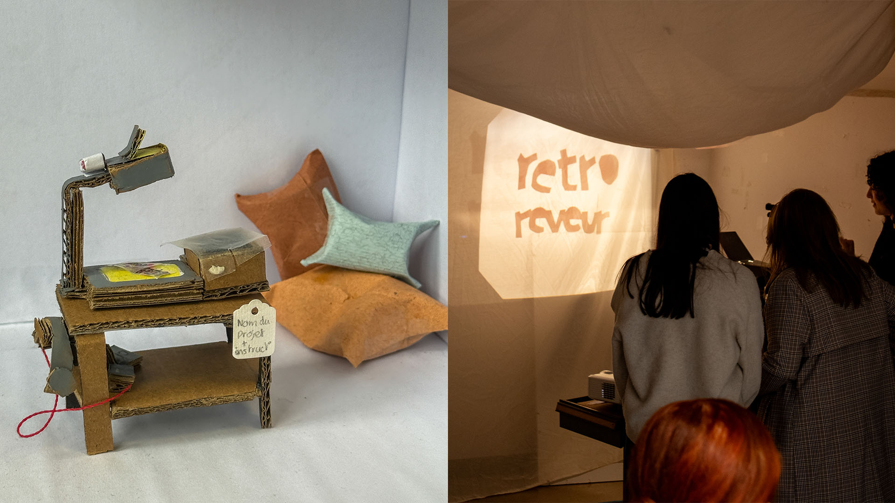
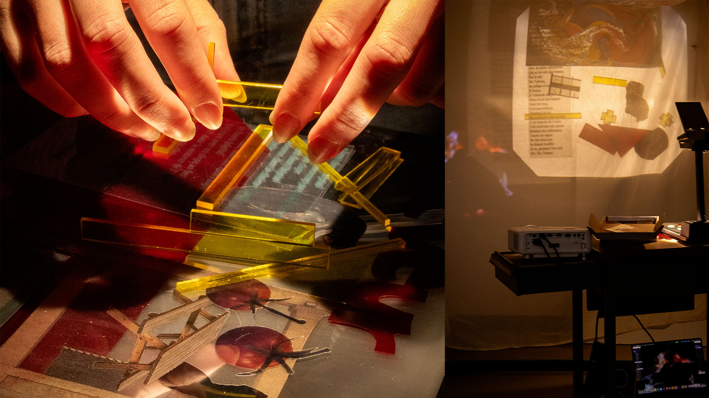
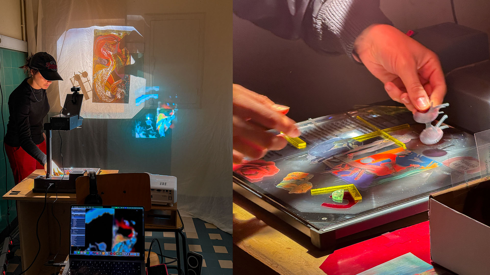
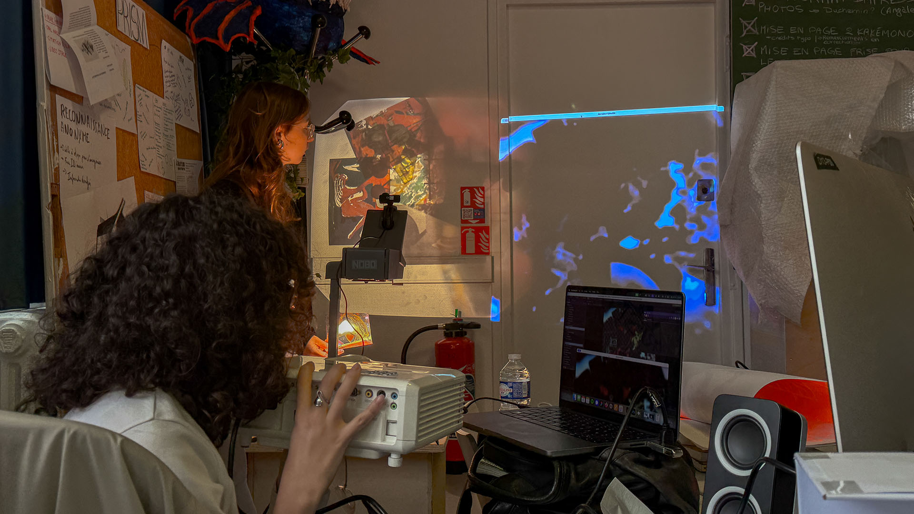

Retro Rêveur
Retro Rêveur est un dispositif interactif et immersif
conçu avec Ornella Antony, Lucie Pensivy et Elysa Picquendar, en collaboration avec le GHU de Paris et le Lab-ah,
dans le cadre d’une recherche autour des expériences sensibles en milieu hospitalier.
Nous avons rencontré des professionnel·les soignant·es qui nous ont présenté le site, les troubles psychiques pris en charge, ainsi que les dispositifs existants pour accompagner les patient·es avant, pendant et après les crises. Notre mission était d’imaginer une expérience créative capable de compléter ces formes de soin.
À partir de matières collectées au sein de l’hôpital (photographies, textes, sons, peintures et témoignages issus d’ateliers), le dispositif propose de composer des paysages sensibles grâce à un rétroprojecteur monté sur chariot, associé à une webcam et une diffusion sonore. Les utilisateur·ices manipulent des rhodoïds et objets semi-transparents pour générer des compositions visuelles et sonores en temps réel, créant une expérience immersive et évolutive.
Le choix du rétroprojecteur s’inscrit dans une logique d’accessibilité et de réemploi : objet souvent présent dans les hôpitaux, il diffuse une lumière chaleureuse et enveloppante. Les rhodoïds évoquent quant à eux les radiographies médicales, établissant un lien subtil avec l’univers hospitalier.
Le dispositif n’a pas encore été testé auprès des patient·es, mais il a été expérimenté par les professionnel·les du GHU, qui ont accueilli le projet très positivement et exprimé l’intérêt de le développer auprès d’un public enfant.








